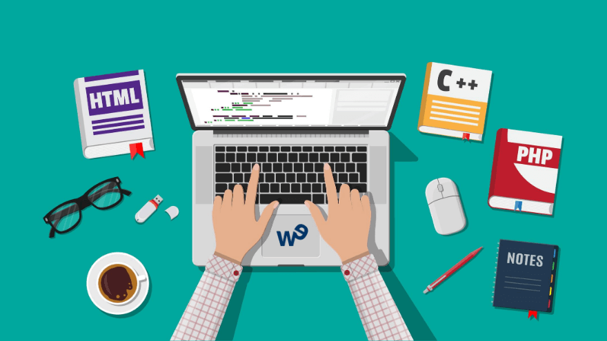
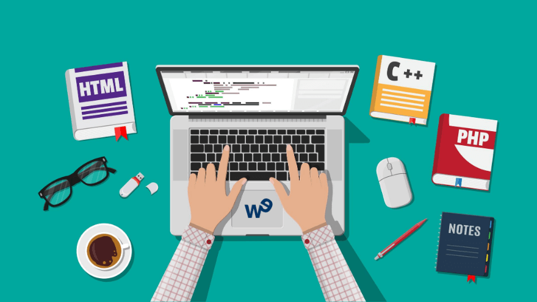

Los encargados del desarrollo backend son desarrolladores web con una gran experiencia en programación, deben especializarle en tener una lógica de programación de calidad, manejar diferentes lenguajes de programación como Java, PHP, Python, .NET entre otros, esto con la finalidad de poder brindar a la pagina web un dinamismo a la hora de interactuar con ella, estos desarrolladores deben ser muy meticulosos puesto que si llegara a presentarse un descuido de su parte, se correría el riesgo de la caída de la página o la filtración de información vulnerable.
Lenguajes de programación más utilizados en el Back-End.
- ASP.NET: Es la plataforma de desarrollo web de Microsoft. Cuenta con las variantes de Web Forms y MVC.
- PHP: Muy utilizado en algunos de los principales gestores de contenido como WordPress.
- Ruby: También se utiliza su framework Ruby on rails.
- Python: Se usa comúnmente con Django como framework.
- Node.js: Más utilizado en los últimos tiempos, ya que utiliza un lenguaje similar al del lado del cliente (JavaScript).


 

Perfil de un desarrollador Back-End.
Ser un desarrollador Back-End conlleva una gran complejidad, puesto que requiere años de estudio y practica constante, seriedad, responsabilidad, una alta capacidad de atención y muchas dosis de concentración. En definitiva, no es un área que sea muy preferida por la mayoría de desarrolladores, y son muy pocos aquellos que se especializan en dicha área. Dentro de la habilidad de un desarrollador Back-End encontramos:
- Debemos manejar lo básico, que es la configuración de los servidores; o por lo menos, debe conocer lo suficiente sobre este punto para poder hacer reportes al responsable de sistemas.
- Debe saber administrar cuando menos un Content Management System (CMS).
- La lógica y el orden deben ser los dos pilares en los que se fundamente su trabajo.
- Debe conocer sobre metodologías de la programación, sus fundamentos y manejar con soltura estos lenguajes, o por lo menos uno de ellos.